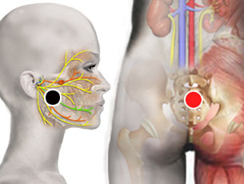
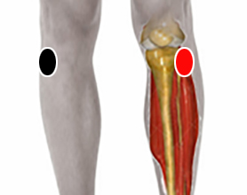

Varices, flebitis
Par
nervio trigémino - sacro

Generalidades:
Las varices o venas varicosas se deben a la dilatación de las venas que dificultan o impiden el retorno de la sangre al corazón.
Esta condición se debe en general al deterioro de los diversos tejidos que conforman las venas, diversos patógenos y alteraciones del pH son detonantes de esta condición, así como una alimentación abundante en grasas saturadas y la falta de ejercicio. En casos extremos se requerirá la extracción de una porción de la vena. Las hemorroides también son un caso particular de venas varicosas en el recto. En el caso de las varices en las piernas, más comunes en las mujeres, uno de los agentes detonantes es la bordetella pertusis . Otras condiciones que pueden favorecer la aparición de este padicimiento son el estar demasiado tiempo de pie o caminar por largos periodos. El levantar las piernas por encima del cuerpo puede brindar descanso. Uno de los ejercicios más recomendados es la natación.
Flebitis:
Al igual que las várices, la flebitis también implica la inflamación de las venas, que además va acompañada de la formación de coágulos. Cuando es superficial sólo afecta a venas secundarias.
Complicaciones:
La Tromboflebitis profunda se presenta cuando una vena profunda como la safena presenta inflamación y coágulo (trombo). En este caso uno de los mayores riesgos es el desprendimiento del coágulo que puede viajar a otros órganos y causar serios trastornos como infarto al miocardio (corazón), infarto pulmonar, daño cerebral, entre otros; según el órgano afectado, esto puede traer serias consecuencias o incluso la muerte.
Causas:
Es un padecimiento que obedece a múltiples factores, los principales son:
Al igual que las varices, la flebitis es una enfermedad crónica-degenerativa que obedece a múltiples factores como alimentación deficiente, falta de higiene, sedentarismo, predisposición congénita, entre otros.
Par
cabeza peroné - cabeza peroné

Generalidades:
Este par alivia las piernas inflamadas.